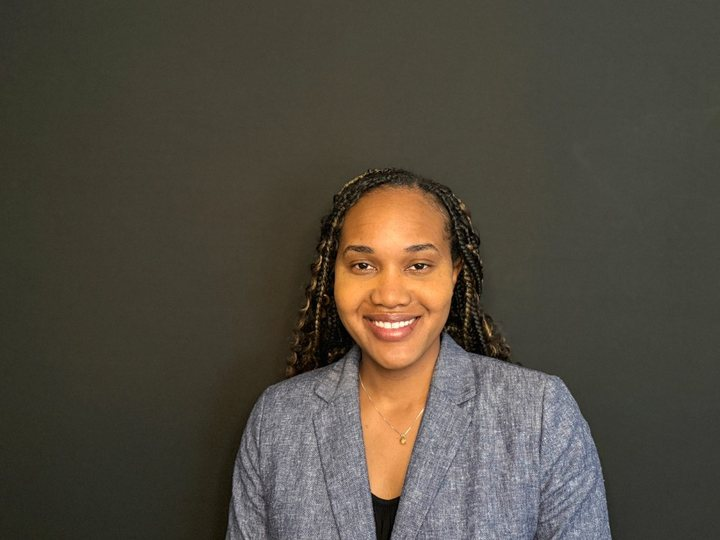

Product leadership · Southern California
VP of Product Experiences building AI, data, and spatial platforms. This page is a leadership impact map—where I’ve led, what scaled, and how to reach me.

Select a company to see what it does, and how I led scale, product experience, systems, and growth.
Leadership impact